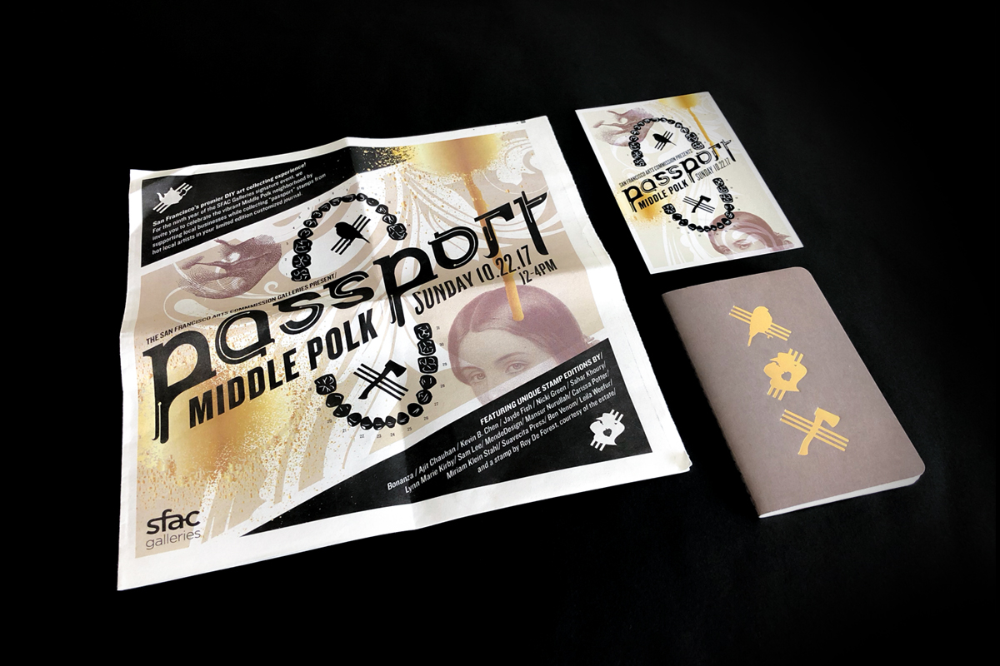
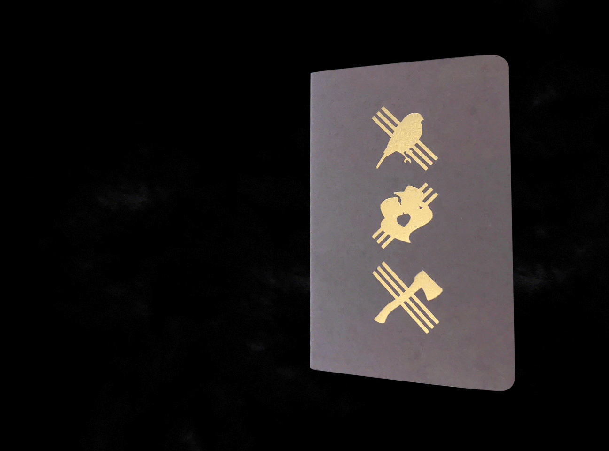
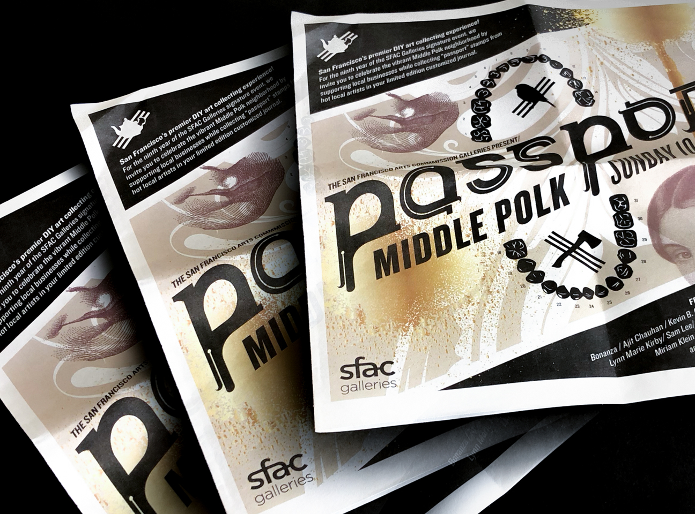
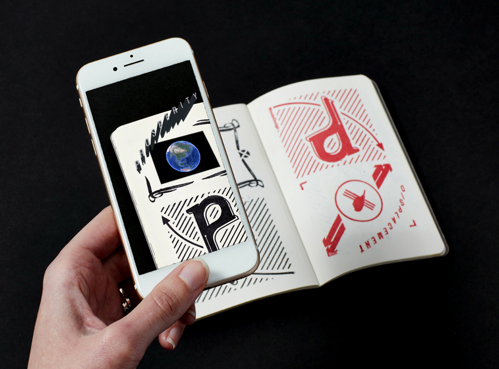

Passport Middle Polk
Branding for San Francisco Arts Commisions' Annual passport event.
As an intern at MendeDesign, I helped the team with the branding for this fun DIY event. In the introduction statement MD discusses the design language as conceptualized by...
"That corridor of Polk bounded by Geary and California. Home, alternately, to immigrants of German stock, Victorian ladies, earthquake survivors, longshoremen, gay entrepreneurs, and those that slipped through the cracks. Now, a thriving commercial strip reflecting the latest wave of prosperity that is San Francisco."

A peek into the passport book and a few of the unique stamps crafted by local artists!
Frank Norris' 1899 novel Mcteague: A Story of San Francisco was an interesting piece that we found tied to Polk's inner history. The novel helped guide the visual direction for the project. A story of a dentist on Polk Street whose journey is one of financial boom, greed, futile love, inevitable bust, and demise. The story is a tribute to the larger relationship with the cycle of prosperity and displacement in San Francisco.

It was a great learning opportunity for me to be apart of the concept development for this project alongside the MD team. I inititially viewed the neighborhood as struggling to grab a hold of an original identity at times. Through working on this project I have come to find that Polk is uniquely rich in history. The neighborhood has been home to many different subcultures that have been layered one on top of the other. A constant reminder that the city is always in flux.
Exhibition Catalog for the event. Participants can learn about featured artists, vendors, and event map. Newsprint.
